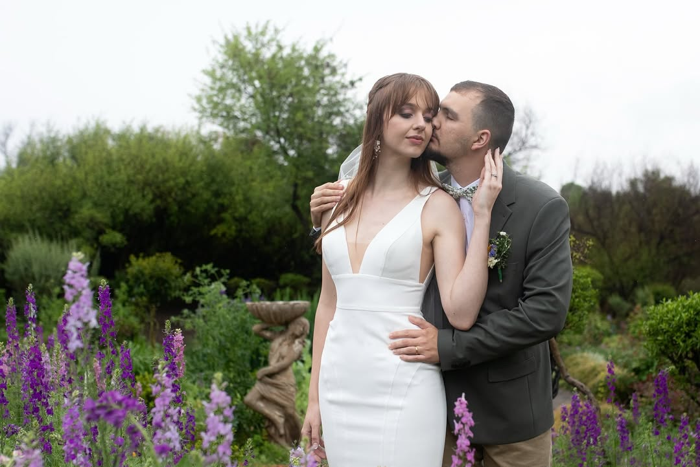
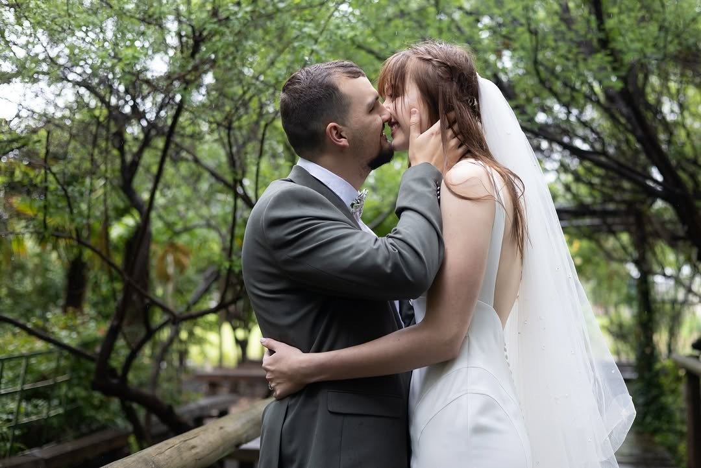
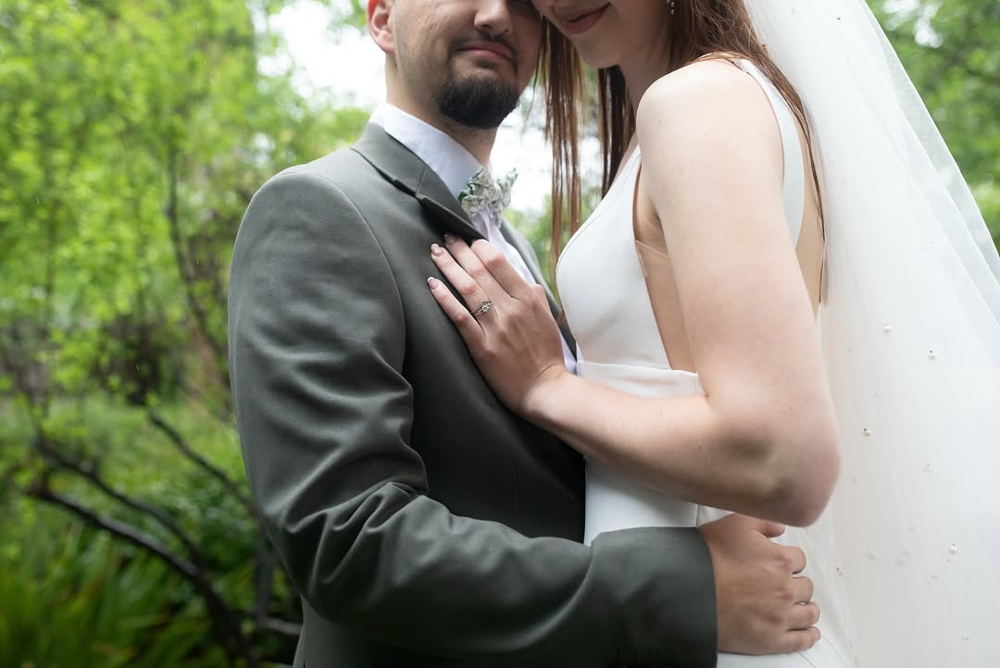
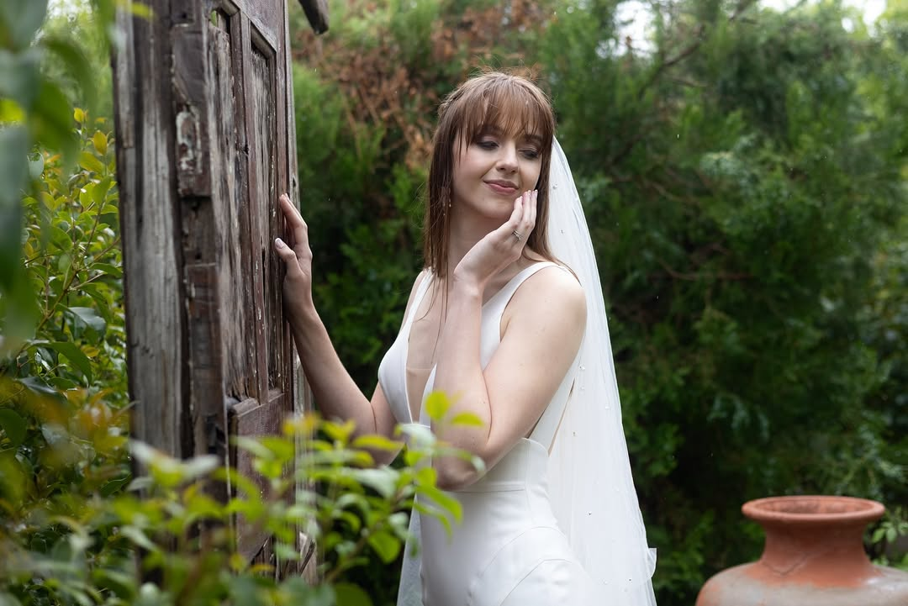

The Beauty of the Small Celebration
Intimate weddings, elopements, and micro-gatherings are about prioritizing meaning over crowd size. This focus allows for raw, honest, and truly personal storytelling, which is where my passion lies.
I specialize in capturing the quiet moments—the subtle glance, the handwritten vows, the closeness of your immediate family—moments that might be lost in the chaos of a large event. If your vision is about deep connection and stunning, intentional details, we are a perfect match.
Moments of Deep Connection




My Approach to Intimate Storytelling
Because your day is unique, my coverage is built around the flow of authentic emotion, not a rigid schedule. My focus is on documentation, not direction.
I focus on essential hours, typically 4-8, to cover the most meaningful parts of your day without unnecessary downtime. This ensures every captured moment is significant.
Whether it’s a mountaintop, a cozy restaurant, or your backyard, I meticulously scout the location to utilize the best natural light and environment for your ceremony.
The final gallery is edited to evoke the exact mood and deep feeling of your day, using soft tones and timeless composition that emphasize intimacy.